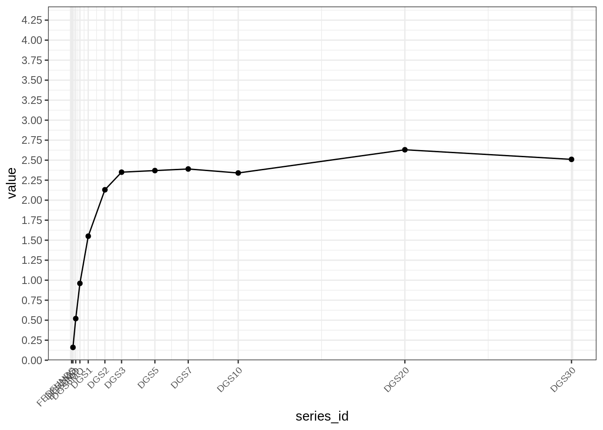

3 Get Data
## Warning in ifelse(substr(series_id, 5, 6) == "MO", 30 *
## as.integer(substr(series_id, : NAs introduced by coercion
## Warning in ifelse(substr(series_id, 5, 6) == "MO", 30 *
## as.integer(substr(series_id, : NAs introduced by coercion
3.5 Yield Curve
## Warning in mask$eval_all_mutate(quo): NAs introduced by coercion## Warning: Removed 2 rows containing missing values (geom_point).## Warning: Removed 2 row(s) containing missing values (geom_path).
## Warning: No renderer available. Please install the gifski, av, or magick package
## to create animated output## NULL